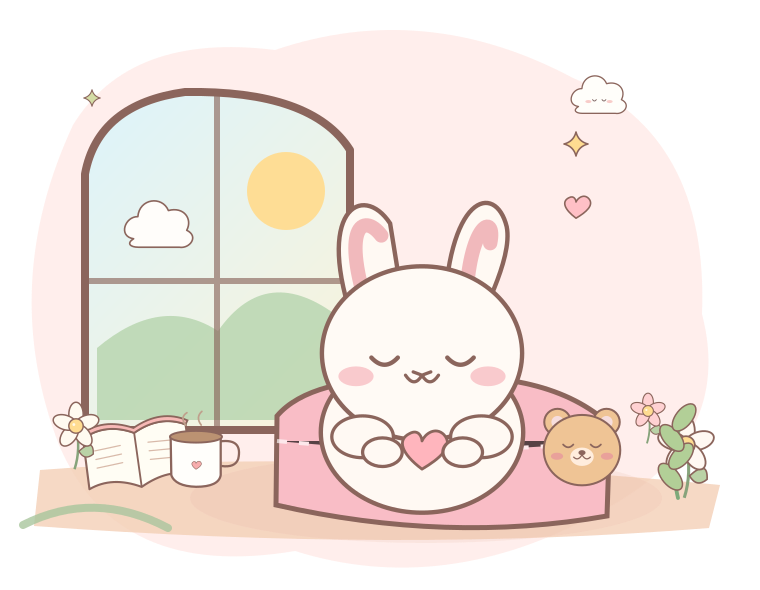
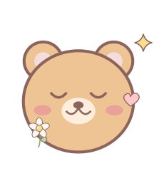
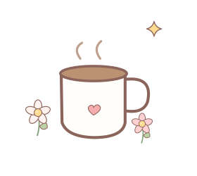
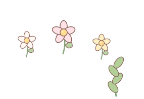

✺ YOUR COZY LITTLE CORNER
今天的你，
今天的你，
也值得被溫柔對待。
不必每一天都充滿力量。這裡有一些文字、一點寧靜，和一個可以慢慢整理心情的角落。先照顧好現在的自己，就很好。
✧ 在自己的步調裡，慢慢變好就好。
slow down ♡
it's okay
it's okay

今天也辛苦啦♡
今天，你的心情如何？
不需要解釋，先允許自己有這個感受。

選一個最貼近現在的感覺吧。

A NOTE TO YOURSELF · 給自己的一句話
你的步伐不需要和任何人一樣。
— 今天也請好好愛自己♡ WORDS THAT HEAL
為心收藏一些溫暖的文字。
挑一篇適合現在的文章，慢慢讀，不必急。

正在整理文章…
TAKE WHAT YOU NEED ♡正在讀取文章…


✦
你不需要先變得完美，才值得擁有平靜。
✦